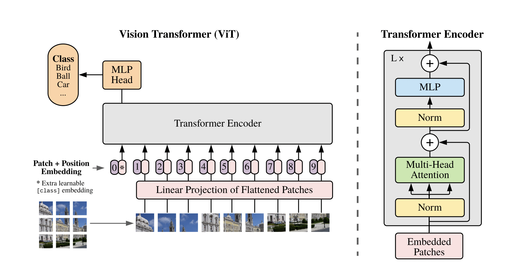
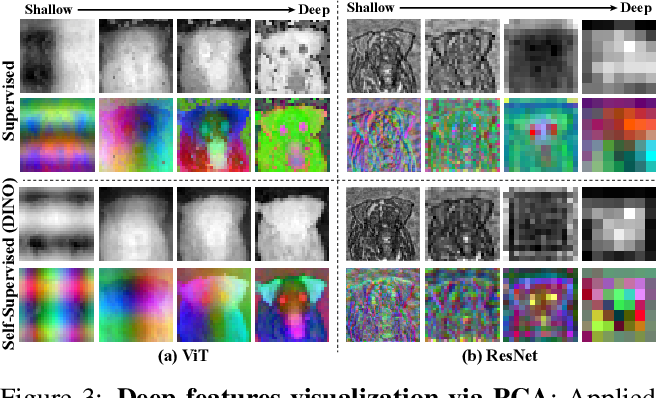

1 ViT

Using huge datasets allows re-learning some of the inductive biases CNNs have. I.e. positional encodings learn image locations even though they are 1D.
Key Points
Why is it a good idea to pre-train vs. use CNNs directly?
- Transformers allow easy multi modalities.
- XLA and other computational infrastructure exists to make transformers very efficient.
What is the difference in the way Transformers process images vs. CNNs?
Transformers are design to work on sets, so to make it work with image we need to somehow convert images to set. To turn sets into sequences we add positional encodings to our inputs so they will have the notion of order.
The way ViT adopt images to be used with transformers is by using 16x16 patches of raw pixels and transforms those with a linear transformation. The transformed vectors are the tokens.
CNNs have a local view of the image, that is their receptive field starts small and grows as we more layers. On the other hand, transformers can see the whole image. Locality in ViT is in the form of image patches, so each token represents some local area, but the attention layer can see all the patches.
Positional embeddings do improve performance, but using 1D is pretty much the same as using 2D. So it seems like the position is not really important, but more like the identity of the patch that matters. Patch distance seem to be encoded in the positional embeddings, also 2D structure seem to emerge from a 1D encoding, this is why hand-crafter 2D encoding doesn’t seem to help there.
As we go deeper in attention layers, the attention distance grows. That implies that initial layers learn local features and deeper layers have more complex global representations. This is similar to the way CNNs work.
ViT features vs. CNNS features
ViT features contain semantic features with high spatial resolution. Each attention layers sees full image. CNN features are localized and coarse. Each feature contains global info (e.g. x32 for the last layer of ResNet)

Questions?
- Keys are the most stable representations of an image (Why?)